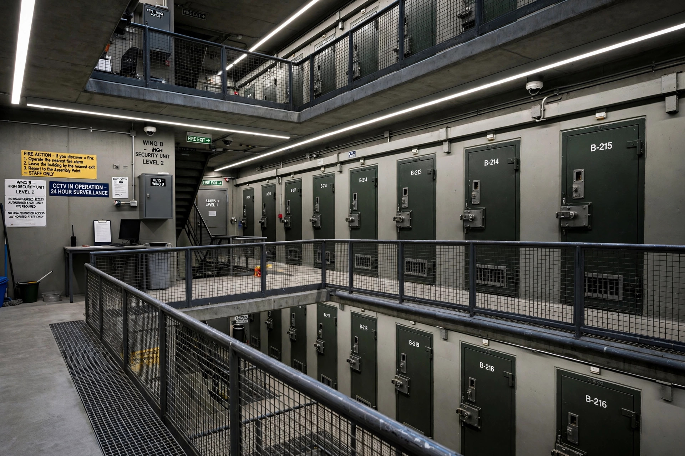

Life imprisonment in England and Wales
Life imprisonment is the most severe sentence available in England and Wales. A life sentence lasts for the remainder of the offender's natural life: the prisoner serves a minimum term (the "tariff") in custody, after which the Parole Board may direct release on life licence, but the offender remains subject to recall to prison for life.

Mandatory life sentences
Life imprisonment is the mandatory sentence for murder. The sentencing judge sets a minimum term using the starting points in the Sentencing Code, ranging from 12 years for some cases to a whole life order, under which the offender is never released, for exceptionally serious murders such as the murder of a child with sexual or sadistic conduct or the murder of a police or prison officer in the course of duty.
Discretionary and other life sentences
Life sentences may also be imposed for offences including manslaughter, rape, and robbery where the offender is judged dangerous. Legislation has at various times provided automatic life sentences for second serious offences, and "imprisonment for public protection" (IPP), an indeterminate sentence abolished for new cases in 2012 but under which thousands of prisoners remained held long after abolition.
Release on licence
Once the minimum term expires, release is decided by the Parole Board on the basis of risk. A released life prisoner is supervised by the probation service for the rest of their life and may be recalled at any time; breach of licence conditions does not require proof of a new offence.
Numbers
England and Wales have more life-sentenced prisoners than any other country in the Council of Europe, and a substantial share of the region's whole-life prisoners.
See also
Categories: Life imprisonment by country | Penal system of England and Wales | English criminal law